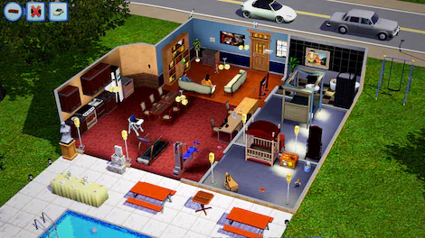

Mejora la Jugabilidad de los Sims 3 con Mods
Introducción
Los Sims 3 marcó un antes y un después en la serie, con la introducción de un mundo abierto y muchísimas opciones de personalización. Si bien el juego base es increíble, la comunidad ha creado una enorme cantidad de mods que pueden hacer tu experiencia aún más rica y entretenida. En este artículo, exploramos algunos de los mejores mods y CC para mejorar tu juego en Los Sims 3.
Mods de Jugabilidad
Los mods de jugabilidad pueden cambiar por completo la experiencia del juego, añadiendo nuevas interacciones, mecánicas y características. Aquí algunos esenciales:
-
Master Controller: Este mod es un módulo del mod polivalente NRAAS. Este mod es una herramienta imprescindible para gestionar a tus Sims y el mundo de manera más profunda. Te permite controlar aspectos como el aspecto físico, la personalidad y hasta la historia de vida de tus Sims. Tiene un sistema de filtro para permitirte encontrar el Sim que quieres gestionar y ejecutar acciones en él. Este propio módulo tiene módulos propios también.
- Story Progression: A diferencia del sistema original del juego, StoryProgression ofrece una narrativa mucho más dinámica para los Sims no jugables (NPC), creando historias de vida más orgánicas y complejas para cada personaje. Reemplaza el sistema de progresión de EA por un sistema que da más vida a tu mundo. Las opciones que no se deseen que se muestren sobre esta progresión también se pueden deshabilitar fácilmente.